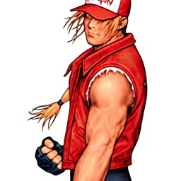

Terry Bogard

Terry Bogard (テリー・ボガード Terī Bogādo) é o protagonista da série de jogos de luta Fatal Fury e um icônico personagem de apoio da série The King of Fighters.
um dos personagens mais conhecidos, Terry é junto de Kyo Kusanagi, Nakoruru e G-Mantle o "mascote" da empresa SNK.Quando Terry tinha 10 anos, ele testemunhou a morte de seu pai nas mãos de Geese Howard. Sabendo que precisavam de mais treinamento para confrontar Geese, os irmãos juraram passar uma década para aperfeiçoar suas artes marciais antes de tentar vingar seu pai. Ao contrário de seu irmão Andy, que deixou Southtown para treinar no Japão, Terry escolheu perambular em seu país de origem, combinando as habilidades aprendidas com seu pai, o mentor de seu pai Tung Fu Rue e as habilidades adquiridas nas ruas.